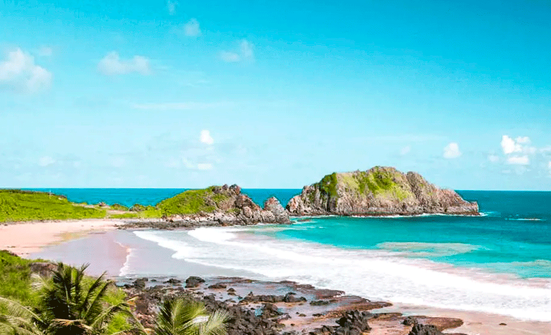

Mapa de Fernando de Noronha, 1886. Arquivo Nacional.
Uma ilha, chamada Quaresma, parecendo muito com a ilha de Fernando de Noronha, aparece no
Planisfério de Cantino de 1502. O mapa de Alberto Cantino foi composto por um cartógrafo português
anônimo e terminado antes de novembro de 1502, bem antes da expedição de Coelho ser estabelecida.
Isso levou à especulação de que a ilha foi descoberta por uma expedição anterior. Entretanto, não há
consenso sobre qual expedição que poderia ter sido a pioneira. O nome, "Quaresma", sugere que o
arquipélago deve ter sido descoberto em março ou início de abril, o que não corresponde bem com
expedições conhecidas. Há também uma misteriosa ilha vermelha à esquerda de Quaresma no mapa de
Cantino, que não se encaixa com a ilha de Fernando de Noronha. Alguns explicaram estas anomalias lendo
quaresma como anaresma (de significado desconhecido, mas que evita o período da Quaresma),[21] e
propuseram que a ilha vermelha é apenas uma mancha acidental de tinta.[22] Alguns historiadores
modernos têm proposto que o arquipélago de Fernando de Noronha não está representado no mapa de
Cantino. Em vez disso, eles propuseram que a ilha Quaresma e a "mancha de tinta" vermelha que
acompanha são, na verdade, o Atol das Rocas, um pouco deslocado no mapa. Roukema concluiu que o Atol
das Rocas é que foi descoberto pelo "navio perdido", que retornou em 16 de março de 1502, bem dentro do
tempo da Quaresma.[23]

De acordo com Vespúcio, a expedição de 1501 retornou a Lisboa em setembro de 1502, ainda a tempo de influenciar a composição final do mapa de Cantino. Infelizmente, Vespúcio não relata ter descoberto esta ilha; na verdade, ele é bastante claro que a primeira vez que ele (e seus companheiros marinheiros) viu a ilha foi na expedição de Coelho em 1503. No entanto, uma carta escrita pelo emissário veneziano Pascualigo em 12 de outubro de 1502, e citada no diário de Marino Sanuto, relata que um navio chegou "da terra dos papagaios" em Lisboa no dia 22 de julho de 1502 (três meses antes Vespúcio).[24] Este poderia ser um navio perdido da expedição de mapeamento que retornou prematuramente, sobre a qual ainda não há informação.[25] O momento da sua famosa chegada (julho de 1502), faz com que seja possível que ele tenha passado pela ilha em algum momento de março de 1502, na viagem de volta, bem dentro do período da Quaresma.
Uma outra teoria é de que a ilha foi descoberta já em 1500, logo após a chegada ao Brasil da Segunda
Armada da Índia, sob a liderança de Pedro Alvares Cabral. Após sua breve parada em terra firme em Porto
Seguro, na Bahia, Cabral despachou um navio de suprimentos sob o comando de Gaspar de Lemos ou
André Gonçalves de volta a Lisboa para relatar a descoberta. Este navio de abastecimento retornando teria
seguido em direção ao norte ao longo da costa brasileira e pode ter chegado até a ilha de Fernando de
Noronha e relatado a sua existência ao governo de Lisboa em julho de 1500.[26] No entanto, isso contradiz
o nome Quaresma, uma vez que o navio de abastecimento partiu bem após o tempo da Quaresma. Uma
quarta possibilidade (improvável) é que a ilha foi descoberta pela Terceira Armada da Índia de João da
Nova, que partiu de Lisboa em março ou abril de 1501 e chegou de volta em setembro de 1502, também a
tempo de influenciar o Planisfério de Cantino.
O cronista Gaspar Correia afirma que na viagem de ida, a Terceira Armada fez uma parada na costa brasileira em torno do Cabo de Santo Agostinho.[27] Dois outros cronistas (João de Barros e Damião de Góis) não mencionam a terra firme, mas eles relatam a descoberta de uma ilha (que eles acreditam ser identificado como ilha de Ascensão, mas isso não é certo).[28] No entanto, o calendário é muito apertado: a Páscoa foi em 11 de abril de 1501, enquanto que a data prevista de partida da Terceiro Armada de Lisboa varia de 5 março a 15 abril, não deixando tempo suficiente para chegar a esses locais dentro da Quaresma. A transição do nome de "São João" para "Fernando de Noronha" foi, provavelmente, apenas pelo uso natural. A carta régia datada de 20 de maio de 1559, aos descendentes da família Noronha, ainda se refere à ilha por seu nome oficial, ilha de São João.[29] No entanto, em outros lugares por exemplo, o diário de bordo de Martim Afonso de Sousa na década de 1530 referia-se ao arquipélago como "ilha de Fernão de Noronha" ("Noronha" era um erro ortográfico comum de "Loronha"). O nome informal eventualmente se tornou o nome oficial.